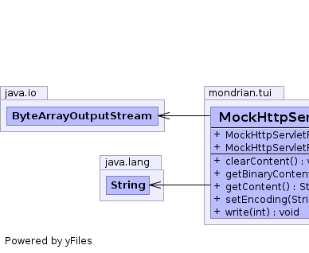

static class MockHttpServletResponse.MockServletOutputStream extends javax.servlet.ServletOutputStream
|  |
| Constructor and Description |
|---|
MockHttpServletResponse.MockServletOutputStream(int size) |
MockHttpServletResponse.MockServletOutputStream(int size,
String encoding) |
| Modifier and Type | Method and Description |
|---|---|
void |
clearContent() |
byte[] |
getBinaryContent() |
String |
getContent() |
void |
setEncoding(String encoding) |
void |
write(int value) |
print, print, print, print, print, print, print, println, println, println, println, println, println, println, printlnclose, flush, write, writepublic MockHttpServletResponse.MockServletOutputStream(int size)
public MockHttpServletResponse.MockServletOutputStream(int size, String encoding)
public void setEncoding(String encoding)
public void write(int value) throws IOException
write in class OutputStreamIOExceptionpublic String getContent() throws IOException
IOExceptionpublic byte[] getBinaryContent() throws IOException
IOExceptionpublic void clearContent()